Lolos Mensetsu
01
Dinda Novarita
おめでとう！！
Bukan sekadar kursus bahasa. Di Sakura Lista kamu dilatih bicara, dibiasakan dengan budaya kerja Jepang, dan didampingi satu per satu sampai berdiri di gerbang keberangkatan.
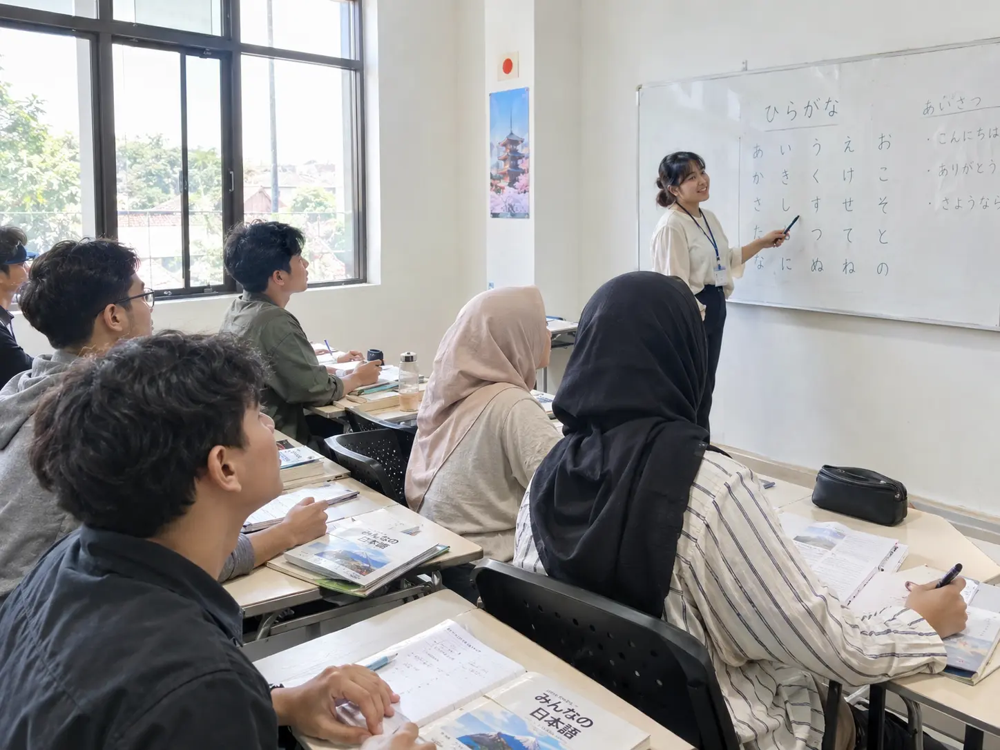
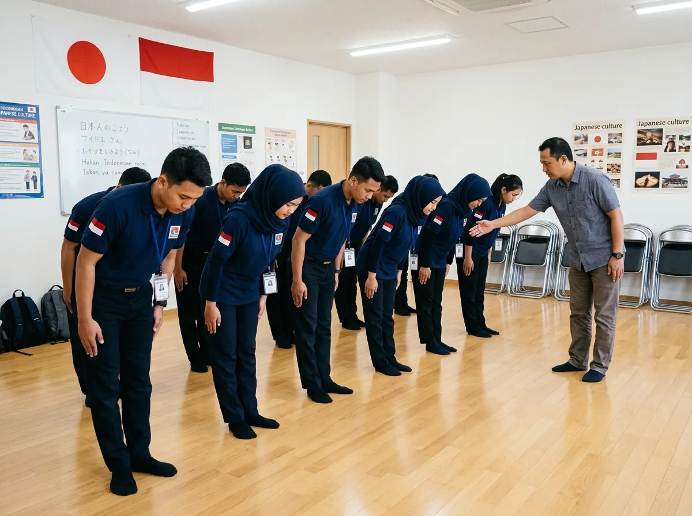
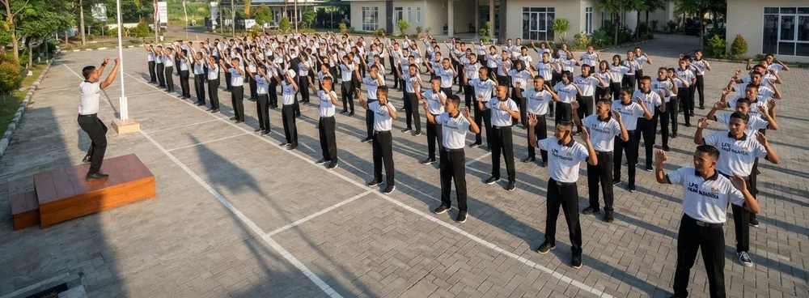
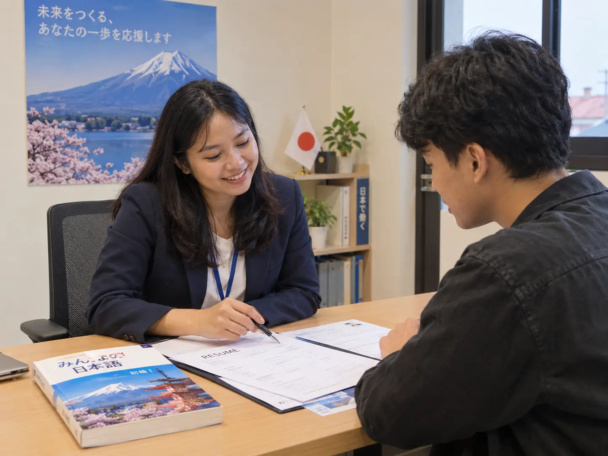
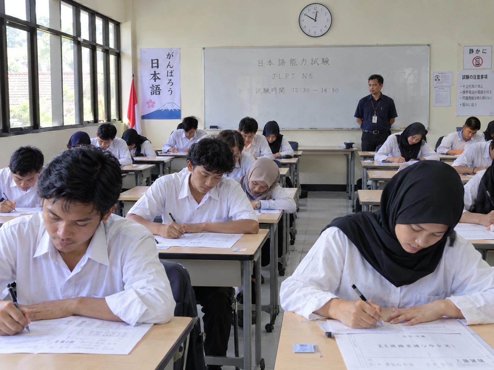
Lembaga berizin dengan proses yang bisa ditelusuri. Tidak ada jalur gelap, tidak ada janji instan.
Satu pembimbing memantau progres bahasamu, latihan mensetsu, sampai pengurusan dokumen keberangkatan.
Rincian komponen biaya dijelaskan di awal, sebelum kamu memutuskan apa pun. Tanyakan langsung via WhatsApp.
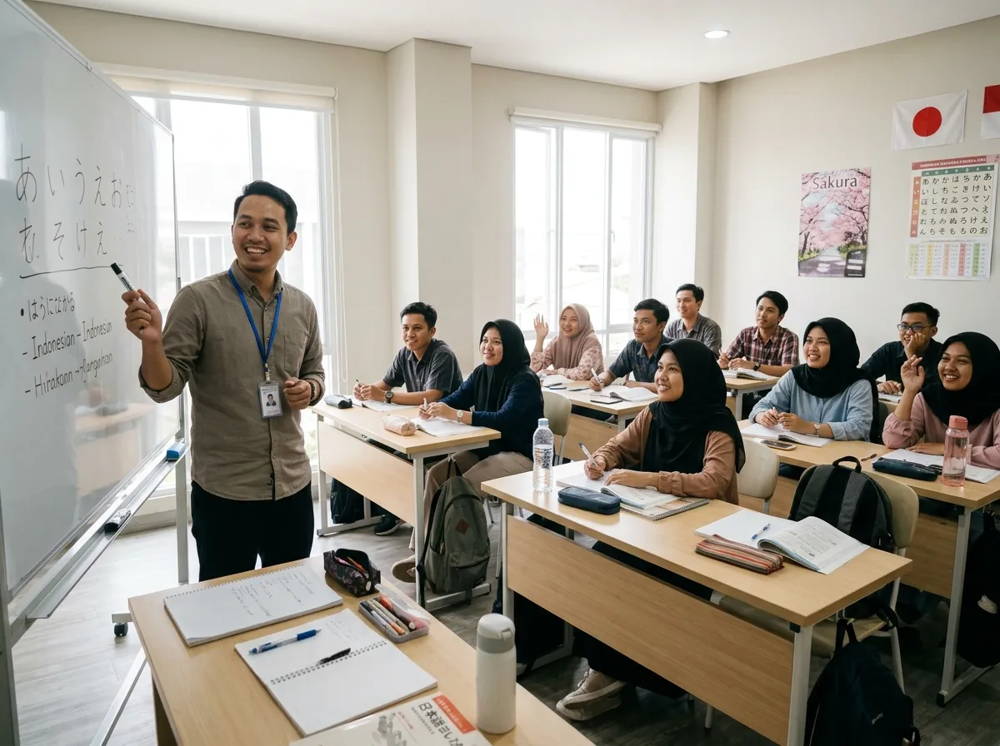
Sakura Lista berdiri untuk satu hal sederhana: memastikan anak muda Indonesia tidak berangkat ke Jepang dengan bekal setengah‑setengah. Bahasanya dilatih sampai bisa dipakai bicara, bukan hanya dihafal untuk ujian. Budaya kerjanya dibiasakan sejak di kelas, supaya hari pertama di Jepang bukan kejutan.
Dari hiragana sampai kaiwa percaya diri. Kelas kecil, latihan bicara setiap hari, evaluasi berkala.
Ojigi, disiplin waktu, komunikasi dengan atasan, kebiasaan rapi — dilatih sampai jadi refleks.
Wawancara kerja dilatih berkali-kali dengan skenario nyata dari mitra perusahaan di Jepang.
Dokumen, paspor, visa, medical check‑up, sampai pengantaran di bandara. Kamu tidak mengurus sendiri.
Setiap bidang punya kosakata, standar keselamatan, dan kebiasaan kerjanya sendiri. Pelatihan disesuaikan dengan job yang kamu tuju, bukan satu kurikulum untuk semua.
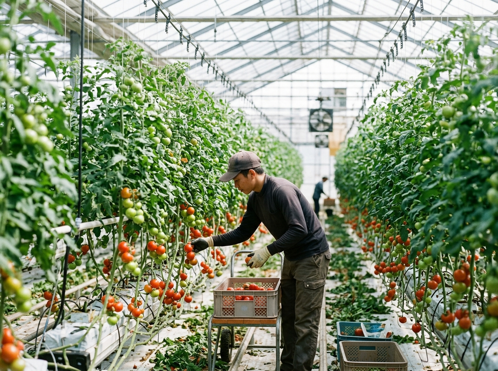
Budidaya sayur, rumah kaca, panen musiman. Banyak penempatan di Kyushu dan Hokkaido.
Pemeliharaan dan inspeksi mesin produksi. Butuh ketelitian dan disiplin laporan.
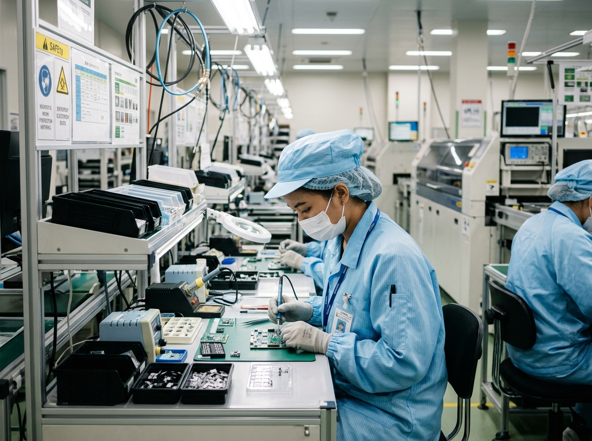
Perakitan, pengelasan, kontrol kualitas di lini produksi pabrik Jepang.
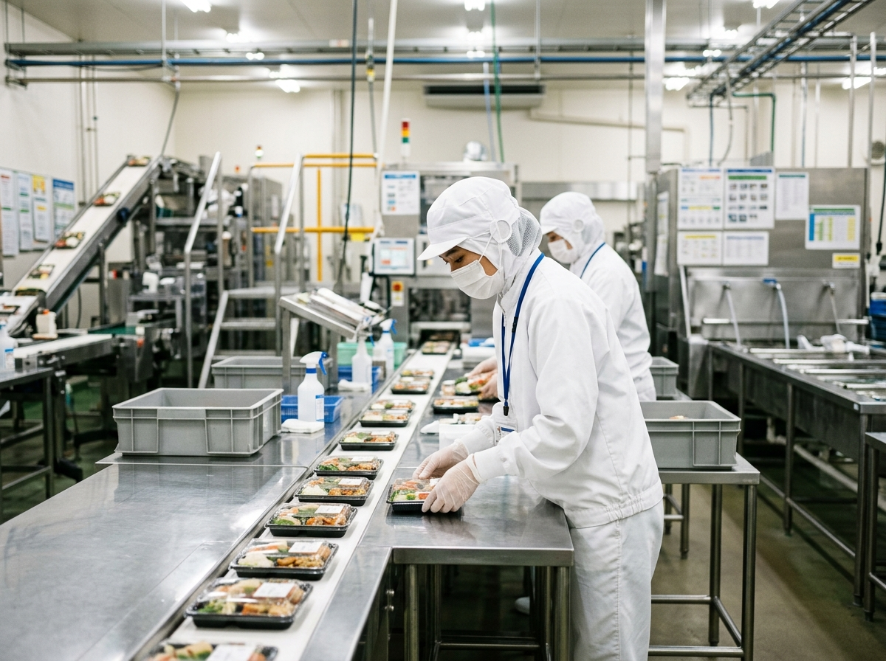
Produksi bento, pengemasan, higienitas pangan. Standar kebersihan sangat ketat.
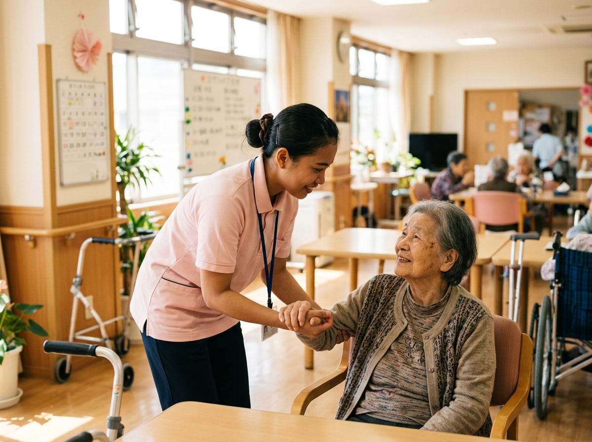
Perawatan lansia. Bahasa jadi kunci utama — kelas kaiwa untuk kaigo dilatih khusus.
Pekerjaan sipil, scaffolding, finishing. Keselamatan kerja dilatih sebelum berangkat.
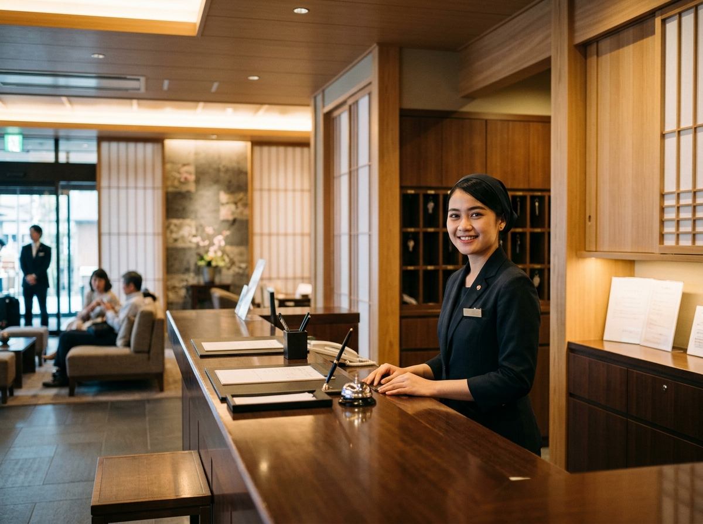
Front office, housekeeping, ryokan. Keigo dan pelayanan ala Jepang jadi fokus.
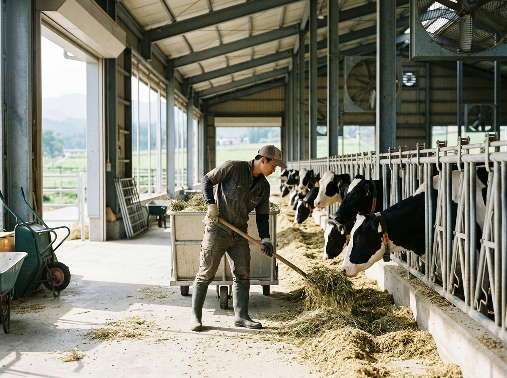
Sapi perah, ayam, pengelolaan kandang. Jam kerja teratur, banyak di daerah.
Tidak ada tahap yang dilompati. Setiap peserta melewati urutan yang sama, dan progresnya dipantau satu per satu.
Konsultasi gratis, tes dasar, dan penentuan job yang paling cocok dengan latar belakangmu.
Kelas intensif hiragana sampai kaiwa, ditambah pembiasaan budaya dan disiplin kerja Jepang.
Simulasi berulang, lalu wawancara dengan perusahaan Jepang. Dibimbing sampai hari H.
Dokumen, visa, medical check‑up, pembekalan akhir, sampai pengantaran di bandara.
Nama-nama yang dulu duduk di kelas Gempol, sekarang bekerja di Jepang. Setiap satu dari mereka pernah merasa bahasanya belum cukup.
おめでとう！！
おめでとう！！
おめでとう！！
おめでとう！！
おめでとう！！
おめでとう！！
Dokumentasi kegiatan harian di Gempol dan momen keberangkatan peserta. Klik untuk memperbesar.
Materi harian yang dibagikan di kelas dan Instagram kami. Bukan hafalan — langsung dipakai dalam kalimat yang kepakai di tempat kerja.
まさか、本当ですか。Masa, benar begitu?
お疲れ様でした。Diucapkan saat selesai kerja — wajib tiap hari di Jepang.
向こうでも頑張ってね。Semangat juga di sana, ya.
承知しました。Baik, saya mengerti — jauh lebih sopan daripada 「わかった」
行ってらっしゃい、気をつけて。Selamat jalan, hati-hati.
明日は面接です。Besok ada wawancara — tahap penentu sebelum berangkat.
Awalnya saya cuma bisa aisatsu. Tiga bulan latihan kaiwa tiap hari, waktu mensetsu saya bisa jawab tanpa gemetar. Sekarang saya kerja di rumah kaca di Kagoshima.
Sebagai orang tua yang paling saya takutkan itu anak dilepas sendiri. Di sini tiap tahap dikabari, dokumen diurus bareng, sampai hari keberangkatan kami diantar ke bandara.
Yang paling kepakai justru pelatihan budayanya. Ojigi, laporan ke atasan, disiplin waktu — di hari pertama kerja saya tidak kaget karena sudah dibiasakan di kelas.
Saya tiga kali gagal simulasi mensetsu dan tetap dibimbing ulang, tidak ditinggal. Keempat kalinya lolos. Itu yang bikin saya percaya tempat ini serius.
Tidak perlu langsung mendaftar. Ceritakan dulu latar belakangmu, lalu kami bantu lihat job mana yang paling masuk — dan apa yang perlu kamu siapkan.